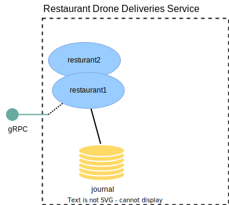

Restaurant deliveries
In this section we will update the restaurant-drone-deliveries-service to accept and store restaurant delivery orders.

Just like for the drones in the first step of the guide we will represent each restaurant and its list of orders as an Event Sourced Entity.
Implementing the restaurant entity
Commands and events
The RestaurantDeliveries actor represents deliveries for one restaurant. It accepts the commands SetUpRestaurant to initialize a restaurant with its location, and RegisterDelivery and ListCurrentDeliveries to add and inspect the current deliveries of the restaurant:
- Scala
-
source
sealed trait Command extends CborSerializable final case class RegisterDelivery( deliveryId: String, destination: Coordinates, replyTo: ActorRef[StatusReply[Done]]) extends Command final case class SetUpRestaurant( localControlLocationId: String, restaurantLocation: Coordinates, replyTo: ActorRef[StatusReply[Done]]) extends Command final case class ListCurrentDeliveries(replyTo: ActorRef[Seq[Delivery]]) extends Command sealed trait Event extends CborSerializable final case class DeliveryRegistered(delivery: Delivery) extends Event final case class RestaurantLocationSet( localControlLocationId: String, coordinates: Coordinates) extends Event final case class Delivery( deliveryId: String, // The following two fields always the same for the same restaurant, so that they can be seen in // the downstream projection. localControlLocationId: String, origin: Coordinates, destination: Coordinates, timestamp: Instant) - Java
-
source
public interface Command extends CborSerializable {} public static final class SetUpRestaurant implements Command { public final String localControlLocationId; public final Coordinates restaurantLocation; public final ActorRef<StatusReply<Done>> replyTo; public SetUpRestaurant( String localControlLocationId, Coordinates restaurantLocation, ActorRef<StatusReply<Done>> replyTo) { this.localControlLocationId = localControlLocationId; this.restaurantLocation = restaurantLocation; this.replyTo = replyTo; } } public static final class RegisterDelivery implements Command { public final String deliveryId; public final Coordinates destination; public final ActorRef<StatusReply<Done>> replyTo; public RegisterDelivery( String deliveryId, Coordinates destination, ActorRef<StatusReply<Done>> replyTo) { this.deliveryId = deliveryId; this.destination = destination; this.replyTo = replyTo; } } public static final class ListCurrentDeliveries implements Command { public final ActorRef<List<Delivery>> replyTo; @JsonCreator public ListCurrentDeliveries(ActorRef<List<Delivery>> replyTo) { this.replyTo = replyTo; } } public interface Event extends CborSerializable {} public static final class RestaurantLocationSet implements Event { public final String localControlLocationId; public final Coordinates coordinates; public RestaurantLocationSet(String localControlLocationId, Coordinates coordinates) { this.localControlLocationId = localControlLocationId; this.coordinates = coordinates; } } public static final class DeliveryRegistered implements Event { public final Delivery delivery; @JsonCreator public DeliveryRegistered(Delivery delivery) { this.delivery = delivery; } } public static final class Delivery { public final String deliveryId; // The following two fields always the same for the same restaurant, so that they can be seen in // the downstream projection. public final String localControlLocationId; public final Coordinates origin; public final Coordinates destination; public final Instant timestamp; public Delivery( String deliveryId, String localControlLocationId, Coordinates origin, Coordinates destination, Instant timestamp) { this.deliveryId = deliveryId; this.localControlLocationId = localControlLocationId; this.origin = origin; this.destination = destination; this.timestamp = timestamp; } }
State
The state starts out as nullNone and then, once the restaurant has been set up will be Some containing an instance of State, which contains the coordinates of the restaurant, the location id of the local-drone-control-service it is closest to, and a list of registered deliveries:
- Scala
-
source
private final case class State( localControlLocationId: String, restaurantLocation: Coordinates, currentDeliveries: Vector[Delivery]) - Java
-
source
public static final class State implements CborSerializable { public final String localControlLocationId; public final Coordinates restaurantLocation; public final List<Delivery> currentDeliveries; public State( String localControlLocationId, Coordinates restaurantLocation, List<Delivery> currentDeliveries) { this.localControlLocationId = localControlLocationId; this.restaurantLocation = restaurantLocation; this.currentDeliveries = currentDeliveries; } }
Command handler
Since the RestaurantDeliveries can be started with no state, it has two different command handlers, one for no state, where it only accepts the SetUpRestaurant command, and one where it accepts the delivery related commands:
- Scala
-
source
private def onCommand( state: Option[State], command: Command): Effect[Event, Option[State]] = state match { case None => onCommandNoState(command) case Some(state) => onCommandInitialized(state, command) } private def onCommandNoState(command: Command): Effect[Event, Option[State]] = command match { case RegisterDelivery(_, _, replyTo) => Effect.reply(replyTo)( StatusReply.Error( "Restaurant not yet initialized, cannot accept registrations")) case ListCurrentDeliveries(replyTo) => Effect.reply(replyTo)(Vector.empty) case SetUpRestaurant(locationId, coordinates, replyTo) => Effect .persist(RestaurantLocationSet(locationId, coordinates)) .thenReply(replyTo)(_ => StatusReply.Ack) } private def onCommandInitialized( state: State, command: Command): Effect[Event, Option[State]] = { command match { case RegisterDelivery(deliveryId, destination, replyTo) => state.currentDeliveries.find(_.deliveryId == deliveryId) match { case Some(existing) if existing.destination == destination => // already registered Effect.reply(replyTo)(StatusReply.Ack) case Some(_) => Effect.reply(replyTo)( StatusReply.Error("Delivery id exists but for other destination")) case None => Effect .persist( DeliveryRegistered( Delivery( deliveryId, state.localControlLocationId, state.restaurantLocation, destination, Instant.now()))) .thenReply(replyTo)(_ => StatusReply.Ack) } case ListCurrentDeliveries(replyTo) => Effect.reply(replyTo)(state.currentDeliveries) case setup: SetUpRestaurant => Effect.reply(setup.replyTo)( StatusReply.Error("Changing restaurant location not supported")) } } - Java
-
source
@Override public CommandHandler<Command, Event, State> commandHandler() { var noStateHandler = newCommandHandlerBuilder() .forNullState() .onCommand(SetUpRestaurant.class, this::onSetUpRestaurant) .onCommand( RegisterDelivery.class, command -> Effect() .reply( command.replyTo, StatusReply.error( "Restaurant not yet initialized, cannot accept registrations"))) .onCommand( ListCurrentDeliveries.class, command -> Effect().reply(command.replyTo, Collections.emptyList())); var stateHandler = newCommandHandlerBuilder() .forNonNullState() .onCommand( SetUpRestaurant.class, command -> Effect() .reply( command.replyTo, StatusReply.error("Changing restaurant location not supported"))) .onCommand(RegisterDelivery.class, this::onRegisterDelivery) .onCommand( ListCurrentDeliveries.class, (state, command) -> // reply with defensive copy of internal mutable state Effect().reply(command.replyTo, new ArrayList<>(state.currentDeliveries))); return noStateHandler.orElse(stateHandler).build(); } private Effect<Event, State> onRegisterDelivery(State state, RegisterDelivery command) { var existing = state.currentDeliveries.stream() .filter(delivery -> delivery.deliveryId.equals(command.deliveryId)) .findFirst(); if (existing.isPresent()) { if (existing.get().destination.equals(command.destination)) { // already registered return Effect().reply(command.replyTo, StatusReply.ack()); } else { return Effect() .reply( command.replyTo, StatusReply.error("Delivery id exists but for other destination")); } } else { return Effect() .persist( new DeliveryRegistered( new Delivery( command.deliveryId, state.localControlLocationId, state.restaurantLocation, command.destination, Instant.now()))) .thenReply(command.replyTo, updatedState -> StatusReply.ack()); } } private Effect<Event, State> onSetUpRestaurant(SetUpRestaurant command) { return Effect() .persist( new RestaurantLocationSet(command.localControlLocationId, command.restaurantLocation)) .thenReply(command.replyTo, updatedState -> StatusReply.ack()); }
gRPC service
To make it possible for users of our service to administer the available restaurants and their queued orders we define a gRPC service with one endpoint for setting up restaurants and one to register a delivery for an already set up restaurant:
- Scala
-
source
syntax = "proto3"; option java_multiple_files = true; option java_package = "central.deliveries.proto"; package central.deliveries; import "common/coordinates.proto"; service RestaurantDeliveriesService { rpc SetUpRestaurant(SetUpRestaurantRequest) returns (RegisterRestaurantResponse) {}; rpc RegisterDelivery(RegisterDeliveryRequest) returns (RegisterDeliveryResponse) {}; } message SetUpRestaurantRequest { string restaurant_id = 1; common.Coordinates coordinates = 2; string local_control_location_id = 3; } message RegisterRestaurantResponse {} message RegisterDeliveryRequest { string delivery_id = 1; string restaurant_id = 2; common.Coordinates coordinates = 3; } message RegisterDeliveryResponse { } - Java
-
source
syntax = "proto3"; option java_multiple_files = true; option java_package = "central.deliveries.proto"; package central.deliveries; import "common/coordinates.proto"; service RestaurantDeliveriesService { rpc SetUpRestaurant(SetUpRestaurantRequest) returns (RegisterRestaurantResponse) {}; rpc RegisterDelivery(RegisterDeliveryRequest) returns (RegisterDeliveryResponse) {}; } message SetUpRestaurantRequest { string restaurant_id = 1; common.Coordinates coordinates = 2; string local_control_location_id = 3; } message RegisterRestaurantResponse {} message RegisterDeliveryRequest { string delivery_id = 1; string restaurant_id = 2; common.Coordinates coordinates = 3; } message RegisterDeliveryResponse { }
And implement the service interface Akka gRPC generates for it.
The setUpRestaurant method first validates that the location id in the request is known, from a pre-defined set of locations in the application config. Then sends a SetUpRestaurant command to the entity to set it up.
- Scala
-
source
package central.deliveries import akka.actor.typed.ActorSystem import akka.cluster.sharding.typed.scaladsl.ClusterSharding import akka.grpc.GrpcServiceException import akka.pattern.StatusReply import akka.util.Timeout import central.{ Coordinates, DeliveriesSettings } import io.grpc.Status import org.slf4j.LoggerFactory import scala.concurrent.{ ExecutionContext, Future } class RestaurantDeliveriesServiceImpl( system: ActorSystem[_], settings: DeliveriesSettings) extends proto.RestaurantDeliveriesService { private val logger = LoggerFactory.getLogger(getClass) private val sharding = ClusterSharding(system) private implicit val ec: ExecutionContext = system.executionContext private implicit val timeout: Timeout = settings.restaurantDeliveriesAskTimeout override def setUpRestaurant(in: proto.SetUpRestaurantRequest) : Future[proto.RegisterRestaurantResponse] = { logger.info( "Set up restaurant {}, coordinates {}, location [{}]", in.restaurantId, in.coordinates, in.localControlLocationId) if (!settings.locationIds.contains(in.localControlLocationId)) { throw new GrpcServiceException(Status.INVALID_ARGUMENT.withDescription( s"The local control location id ${in.localControlLocationId} is not known to the service")) } val entityRef = sharding.entityRefFor(RestaurantDeliveries.EntityKey, in.restaurantId) val coordinates = toCoordinates(in.coordinates) val reply = entityRef.ask( RestaurantDeliveries .SetUpRestaurant(in.localControlLocationId, coordinates, _)) reply.map { case StatusReply.Error(error) => throw new GrpcServiceException( Status.INTERNAL.withDescription(error.getMessage)) case _ => proto.RegisterRestaurantResponse() } } override def registerDelivery(in: proto.RegisterDeliveryRequest) : Future[proto.RegisterDeliveryResponse] = { logger.info( "Register delivery for restaurant {}, delivery id {}, destination {}", in.restaurantId, in.deliveryId, in.coordinates.get) val entityRef = sharding.entityRefFor(RestaurantDeliveries.EntityKey, in.restaurantId) val destination = toCoordinates(in.coordinates) val reply = entityRef.ask( RestaurantDeliveries.RegisterDelivery(in.deliveryId, destination, _)) reply.map { case StatusReply.Error(error) => throw new GrpcServiceException( Status.INTERNAL.withDescription(error.getMessage)) case _ => proto.RegisterDeliveryResponse() } } private def toCoordinates( protoCoordinates: Option[common.proto.Coordinates]): Coordinates = protoCoordinates match { case Some(pc) => Coordinates.fromProto(pc) case None => throw new GrpcServiceException( Status.INVALID_ARGUMENT.withDescription("Missing coordinates")) } } - Java
-
source
package central.deliveries; import akka.Done; import akka.actor.typed.ActorSystem; import akka.cluster.sharding.typed.javadsl.ClusterSharding; import akka.grpc.GrpcServiceException; import central.Coordinates; import central.DeliveriesSettings; import central.deliveries.proto.*; import io.grpc.Status; import java.util.concurrent.CompletionStage; import org.slf4j.Logger; import org.slf4j.LoggerFactory; public final class RestaurantDeliveriesServiceImpl implements RestaurantDeliveriesService { private static final Logger logger = LoggerFactory.getLogger(RestaurantDeliveries.class); private final ActorSystem<?> system; private final DeliveriesSettings settings; private final ClusterSharding sharding; public RestaurantDeliveriesServiceImpl(ActorSystem<?> system, DeliveriesSettings settings) { this.system = system; this.settings = settings; this.sharding = ClusterSharding.get(system); } @Override public CompletionStage<RegisterRestaurantResponse> setUpRestaurant(SetUpRestaurantRequest in) { logger.info( "Set up restaurant {}, coordinates {}-{}, location [{}]", in.getRestaurantId(), in.getCoordinates().getLatitude(), in.getCoordinates().getLongitude(), in.getLocalControlLocationId()); if (!settings.locationIds.contains(in.getLocalControlLocationId())) { throw new GrpcServiceException( Status.INVALID_ARGUMENT.withDescription( "The local control location id " + in.getLocalControlLocationId() + " is not known to the service")); } var entityRef = sharding.entityRefFor(RestaurantDeliveries.ENTITY_KEY, in.getRestaurantId()); var coordinates = Coordinates.fromProto(in.getCoordinates()); CompletionStage<Done> reply = entityRef.askWithStatus( replyTo -> new RestaurantDeliveries.SetUpRestaurant( in.getLocalControlLocationId(), coordinates, replyTo), settings.restaurantDeliveriesAskTimeout); return reply.handle( (done, error) -> { if (error != null) { throw new GrpcServiceException(Status.INTERNAL.withDescription(error.getMessage())); } else { return RegisterRestaurantResponse.getDefaultInstance(); } }); } @Override public CompletionStage<RegisterDeliveryResponse> registerDelivery(RegisterDeliveryRequest in) { logger.info( "Register delivery for restaurant {}, delivery id {}, destination {},{}", in.getRestaurantId(), in.getDeliveryId(), in.getCoordinates().getLatitude(), in.getCoordinates().getLongitude()); var entityRef = sharding.entityRefFor(RestaurantDeliveries.ENTITY_KEY, in.getRestaurantId()); var destination = Coordinates.fromProto(in.getCoordinates()); CompletionStage<Done> reply = entityRef.askWithStatus( replyTo -> new RestaurantDeliveries.RegisterDelivery(in.getDeliveryId(), destination, replyTo), settings.restaurantDeliveriesAskTimeout); return reply.handle( (done, error) -> { if (error != null) { throw new GrpcServiceException(Status.INTERNAL.withDescription(error.getMessage())); } else { return RegisterDeliveryResponse.getDefaultInstance(); } }); } }
Running the sample
The complete sample can be downloaded from GitHub, but note that it also includes the next step of the guide:
- Java: https://github.com/akka/akka-projection/tree/main/samples/grpc/restaurant-drone-deliveries-service-java
- Scala: https://github.com/akka/akka-projection/tree/main/samples/grpc/restaurant-drone-deliveries-service-scala
In this step we created a local entity, so we can try it out by running the restaurant-drone-deliveries-service without any local-drone-control services.
To start the drone-restaurant-deliveries-service.
As the service needs a PostgreSQL instance running, start that up in a docker container and create the database schema (if you didn’t do that in the previous guide step):
docker compose up --wait
docker exec -i postgres_db psql -U postgres -t < ddl-scripts/create_tables.sql
Then start the service:
sbt -Dconfig.resource=local1.conf run
And optionally one or two more Akka cluster nodes, but note that the local drone controls are statically configured to the gRPC port of the first and will only publish events to that node.
sbt -Dconfig.resource=local2.conf run
sbt -Dconfig.resource=local3.conf run
mvn compile exec:exec -DAPP_CONFIG=local1.conf
And optionally one or two more Akka cluster nodes, but note that the local drone controls are statically configured to the gRPC port of the first and will only publish events to that node.
mvn compile exec:exec -DAPP_CONFIG=local2.conf
mvn compile exec:exec -DAPP_CONFIG=local3.conf
Create a restaurant with grpcurl:
grpcurl -d '{"restaurant_id":"restaurant1","coordinates":{"latitude": 59.330324, "longitude": 18.039568}, "local_control_location_id": "sweden/stockholm/kungsholmen" }' -plaintext localhost:8101 central.deliveries.RestaurantDeliveriesService.SetUpRestaurant
Set up another restaurant, closest to a different local drone control
grpcurl -d '{"restaurant_id":"restaurant2","coordinates":{"latitude": 59.342046, "longitude": 18.059095}, "local_control_location_id": "sweden/stockholm/norrmalm" }' -plaintext localhost:8101 central.deliveries.RestaurantDeliveriesService.SetUpRestaurant
Register a delivery for the first restaurant
grpcurl -d '{"restaurant_id":"restaurant1","delivery_id": "order1","coordinates":{"latitude": 59.330841, "longitude": 18.038885}}' -plaintext localhost:8101 central.deliveries.RestaurantDeliveriesService.RegisterDelivery
Register a delivery for the second restaurant
grpcurl -d '{"restaurant_id":"restaurant2","delivery_id": "order2","coordinates":{"latitude": 59.340128, "longitude": 18.056303}}' -plaintext localhost:8101 central.deliveries.RestaurantDeliveriesService.RegisterDelivery
What’s next?
- Replicate the restaurant orders to the right local-drone-control PoP
- Let a drone pick up the closest waiting order from the local-drone-control